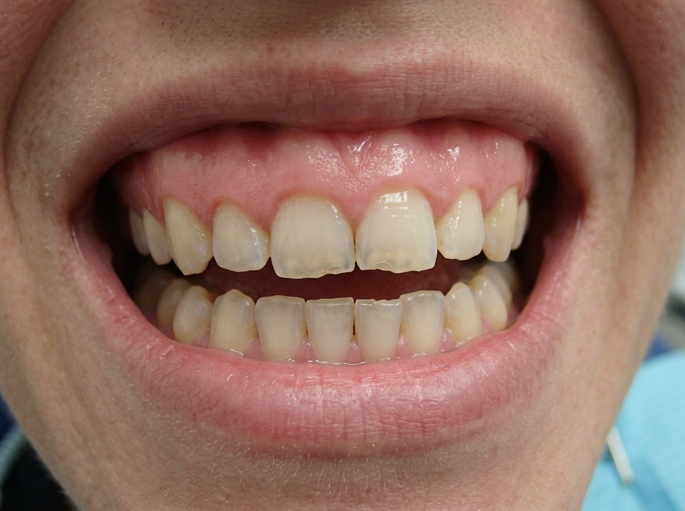
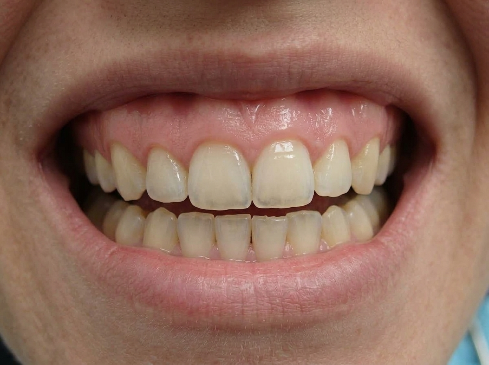

Antes

Depois

Obra Assinada
Ruan Cerqueira
Caso clínico de paciente com desgaste incisal provocado por bruxismo e desarmonia no contorno gengival. O procedimento redesenhou a margem gengival e restabeleceu as bordas dentais com resina composta refinada, preservando a anatomia e a translucidez natural.
- Contorno gengival harmônico e proporcional
- Correção anatômica dos desgastes de bruxismo
- Acabamento imperceptível e textura natural de esmalte